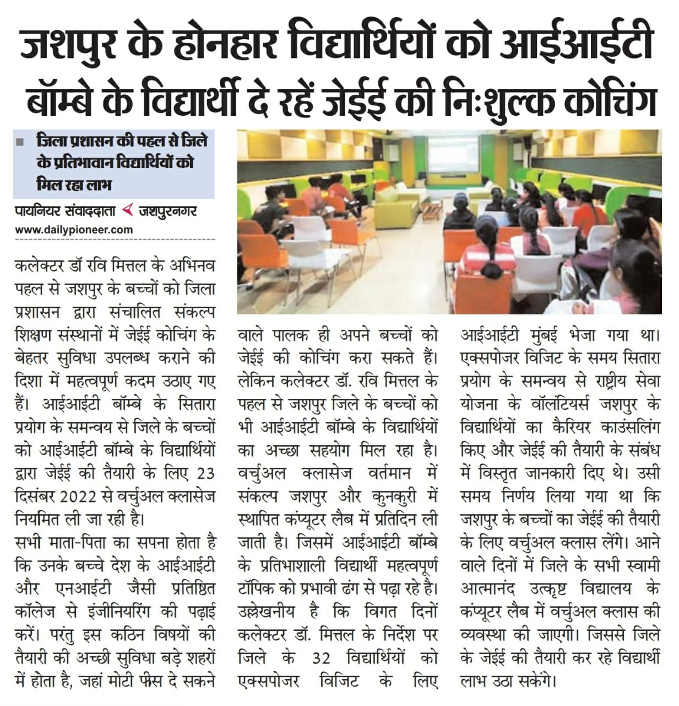

PRAYOG Project Dashboard
News

Previous
Next
Ongoing Projects
Drinking water quality assessment in Padali and Madgyal villages in Maharashtra
DPR Preparation for environmental impact assessment of spent wash spill
Hands-on PRA exercise for 2 M.Tech batches for an academic course
Third-party Impact evaluation for CSR programs
Evaluation and impact assessment of women entrepreneurship program in Andhra Pradesh and Maharashtra
Academia-NGO collaboration for processing of Nachni & Varai crops in Kolhapur district in Maharashtra
Enhancing marketability of SHG products in rural areas of Raigarh district in Chhattisgarh
Women's education in rural areas of Bhavnagar District in Gujrat
Solid waste and sanitation issues during the Shravani mela at Deoghar in Jharkhand
Pilgrimage crowd management at Babadham temple in the Deoghar district of Jharkhand
Needs assessment and program design for women entrepreneurship development at Malvani-Malad in Mumbai
Internships to MSBTE-affiliated Polytechnic students
Technology transfer & handholding in rural development in Chhattisgarh
Potential collaborations on technical support to incubation centers for the development of entrepreneurs
Technical partner in the design, implementation, monitoring, and evaluation of developmental projects
Rural Intervention for cheaper deafness detection machines for new borns
Research Wing design and capacity building for MSEDCL
Academia-PRAYOG collaboration for technical projects through engineering students
Development of a protocol for bee box monitoring & honey traceability
Preparation of CSR and Sustainability Policy for IRCTC LTD.
Preparation of Urban Solid Waste Management Plan for Erode in Tamil Nadu
Baseline and frontline assessment of interventions in Education, Health, and Rural Development by Koderma district administration in Jharkhand
Exposure visits by students from Tribal areas in the Jashpur district in Chhattisgarh
Capacity Building of faculty and Green Campus initiatives by MSFDA
Needs assessment and program design for entrepreneurship in digital services
Optimization of Public Distribution System network
Collaboration toward safe drinking water
Preparation of master plan for Bheema river
Collaboration with IITB for CSR-funded projects
Lake and pond rejuvenation through CSR funds
Internship/fellowship opportunities for M.Tech students at CTARA, IITB through CSR
Lake rejuvenation
Assessment of green initiatives by JSW in Carbon Sequestration, Mangroves Plantation, Ground Water Rejuvenation, and FPOs
Strengthening honey beekeeping as livelihood opportunities
Capacity building of health workers in overcoming challenges of Malnutrition
Rejuvenation and protection plan for existing ponds
Development of Rural Industrial Park Areas in the Jashpur district
School linkages for creating a better learning environment in tribal areas
Development of an alert system during disasters like landslides
Policy analysis for integrating slums in peri-urban areas
Developing district data analytics and information system at PRAYOG
Capacity building of health workers in Malnutrition
Collaboration as a technical partner for various projects in rural areas
Dissemination of improved cookstoves in Chhattisgarh
Development of Rural Industrial Park Areas
Citizen complaint redressal system
Knowledge partner for various initiatives for developmental activities in Odisha
Knowledge partner for various initiatives for developmental activities in Odisha
48
Projects
11
States
45+
IITB Faculties
22+
Departments
10,000+
Beneficiaries
Total Visitors:
Twitter
Tweets by prayogiitb
Newsletter
Sign-up for NewsLetter